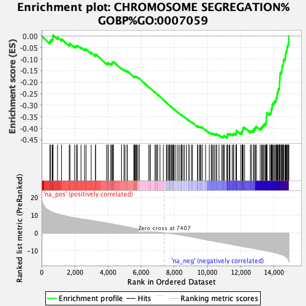
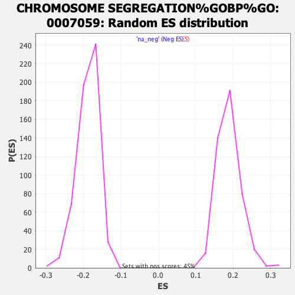

| | | Dataset | tel_exp_collapsed |
| Phenotype | NoPhenotypeAvailable |
| Upregulated in class | na_neg |
| GeneSet | CHROMOSOME SEGREGATION%GOBP%GO:0007059 |
| Enrichment Score (ES) | -0.44276702 |
| Normalized Enrichment Score (NES) | -2.3614533 |
| Nominal p-value | 0.0 |
| FDR q-value | 4.2076563E-4 |
| FWER p-Value | 0.005 |
Table: GSEA Results Summary

Fig 1: Enrichment plot: CHROMOSOME SEGREGATION%GOBP%GO:0007059
Profile of the Running ES Score & Positions of GeneSet Members on the Rank Ordered List
| PROBE | GENE SYMBOL | GENE_TITLE | RANK IN GENE LIST | RANK METRIC SCORE | RUNNING ES | CORE ENRICHMENT | | 1 | CHMP1B | | | 499 | 12.353 | -0.0233 | No |
| 2 | TTN | | | 554 | 12.068 | -0.0166 | No |
| 3 | SETDB2 | | | 646 | 11.685 | -0.0128 | No |
| 4 | NDE1 | | | 681 | 11.548 | -0.0052 | No |
| 5 | CHMP2A | | | 689 | 11.519 | 0.0042 | No |
| 6 | RAD51C | | | 960 | 10.626 | -0.0050 | No |
| 7 | MSTO1 | | | 1200 | 10.078 | -0.0126 | No |
| 8 | CHMP4A | | | 1665 | 9.029 | -0.0364 | No |
| 9 | TEX14 | | | 1709 | 8.927 | -0.0317 | No |
| 10 | RPS3 | | | 1986 | 8.477 | -0.0431 | No |
| 11 | PHB2 | | | 2095 | 8.286 | -0.0434 | No |
| 12 | BANF1 | | | 2153 | 8.194 | -0.0402 | No |
| 13 | ANKRD53 | | | 2374 | 7.849 | -0.0484 | No |
| 14 | CDT1 | | | 2589 | 7.553 | -0.0565 | No |
| 15 | KIF4B | | | 2680 | 7.423 | -0.0562 | No |
| 16 | NTMT1 | | | 2988 | 6.974 | -0.0711 | No |
| 17 | PPP2R1A | | | 3251 | 6.548 | -0.0833 | No |
| 18 | NEK11 | | | 3255 | 6.543 | -0.0779 | No |
| 19 | SIRT7 | | | 3918 | 5.558 | -0.1181 | No |
| 20 | PDCD6IP | | | 4007 | 5.437 | -0.1194 | No |
| 21 | RAN | | | 4013 | 5.423 | -0.1151 | No |
| 22 | ANKRD31 | | | 4161 | 5.129 | -0.1207 | No |
| 23 | CCNB1IP1 | | | 4237 | 5.013 | -0.1215 | No |
| 24 | PMF1 | | | 4250 | 4.984 | -0.1180 | No |
| 25 | RIOK3 | | | 4261 | 4.970 | -0.1144 | No |
| 26 | MCMBP | | | 4322 | 4.842 | -0.1144 | No |
| 27 | VPS4A | | | 4337 | 4.818 | -0.1112 | No |
| 28 | MUS81 | | | 4813 | 3.990 | -0.1400 | No |
| 29 | AKAP8L | | | 4970 | 3.727 | -0.1474 | No |
| 30 | MAD1L1 | | | 5027 | 3.630 | -0.1481 | No |
| 31 | SMC3 | | | 5149 | 3.398 | -0.1534 | No |
| 32 | MIS12 | | | 5163 | 3.369 | -0.1514 | No |
| 33 | CENPH | | | 5563 | 2.604 | -0.1763 | No |
| 34 | PTTG1 | | | 5595 | 2.559 | -0.1762 | No |
| 35 | CHMP3 | | | 5616 | 2.505 | -0.1754 | No |
| 36 | TUBG2 | | | 5657 | 2.438 | -0.1760 | No |
| 37 | STAG1 | | | 5715 | 2.327 | -0.1779 | No |
| 38 | HORMAD1 | | | 5740 | 2.299 | -0.1776 | No |
| 39 | TUBG1 | | | 5802 | 2.183 | -0.1798 | No |
| 40 | RNF212 | | | 5886 | 2.019 | -0.1837 | No |
| 41 | NCAPH2 | | | 6456 | 1.078 | -0.2214 | No |
| 42 | PIBF1 | | | 6536 | 0.955 | -0.2260 | No |
| 43 | SYCE2 | | | 6552 | 0.936 | -0.2262 | No |
| 44 | SYCP2 | | | 6838 | 0.558 | -0.2451 | No |
| 45 | FBXW7 | | | 6850 | 0.543 | -0.2454 | No |
| 46 | CHMP4B | | | 6918 | 0.459 | -0.2495 | No |
| 47 | CHMP2B | | | 6988 | 0.372 | -0.2539 | No |
| 48 | DCTN2 | | | 6998 | 0.367 | -0.2542 | No |
| 49 | P3H4 | | | 7135 | 0.229 | -0.2632 | No |
| 50 | MIS18A | | | 7342 | 0.046 | -0.2772 | No |
| 51 | CENPK | | | 7528 | -0.091 | -0.2897 | No |
| 52 | ZW10 | | | 7544 | -0.103 | -0.2906 | No |
| 53 | RB1 | | | 7620 | -0.162 | -0.2955 | No |
| 54 | CHMP4C | | | 7685 | -0.206 | -0.2997 | No |
| 55 | NAA50 | | | 7701 | -0.226 | -0.3005 | No |
| 56 | SEH1L | | | 7714 | -0.236 | -0.3011 | No |
| 57 | BECN1 | | | 7783 | -0.303 | -0.3055 | No |
| 58 | PDS5A | | | 7845 | -0.364 | -0.3093 | No |
| 59 | TOP1 | | | 7862 | -0.380 | -0.3101 | No |
| 60 | BOD1 | | | 7927 | -0.448 | -0.3141 | No |
| 61 | SMC1A | | | 7951 | -0.479 | -0.3152 | No |
| 62 | REC8 | | | 8002 | -0.536 | -0.3181 | No |
| 63 | NCAPD3 | | | 8096 | -0.678 | -0.3239 | No |
| 64 | NAA60 | | | 8215 | -0.858 | -0.3311 | No |
| 65 | CHMP5 | | | 8300 | -0.966 | -0.3360 | No |
| 66 | SRPK1 | | | 8407 | -1.133 | -0.3422 | No |
| 67 | STAG2 | | | 8428 | -1.173 | -0.3426 | No |
| 68 | HDAC8 | | | 8447 | -1.204 | -0.3428 | No |
| 69 | NIPBL | | | 8525 | -1.332 | -0.3469 | No |
| 70 | DIS3L2 | | | 8610 | -1.447 | -0.3513 | No |
| 71 | CENPW | | | 8726 | -1.634 | -0.3578 | No |
| 72 | RRS1 | | | 8883 | -1.922 | -0.3667 | No |
| 73 | RGS14 | | | 8888 | -1.936 | -0.3653 | No |
| 74 | DSCC1 | | | 9028 | -2.169 | -0.3729 | No |
| 75 | TRAPPC12 | | | 9099 | -2.293 | -0.3757 | No |
| 76 | TLK1 | | | 9397 | -2.836 | -0.3934 | No |
| 77 | SMC2 | | | 9398 | -2.840 | -0.3910 | No |
| 78 | STAG3 | | | 9402 | -2.850 | -0.3887 | No |
| 79 | CDK5RAP2 | | | 9512 | -3.040 | -0.3935 | No |
| 80 | RAB11A | | | 9564 | -3.135 | -0.3943 | No |
| 81 | NSL1 | | | 9612 | -3.233 | -0.3947 | No |
| 82 | SPICE1 | | | 9699 | -3.407 | -0.3977 | No |
| 83 | HIRA | | | 9887 | -3.733 | -0.4072 | No |
| 84 | PDS5B | | | 10112 | -4.154 | -0.4188 | No |
| 85 | TLK2 | | | 10228 | -4.332 | -0.4229 | No |
| 86 | OIP5 | | | 10280 | -4.407 | -0.4226 | No |
| 87 | ZNF207 | | | 10348 | -4.538 | -0.4232 | No |
| 88 | PINX1 | | | 10428 | -4.680 | -0.4246 | No |
| 89 | FANCD2 | | | 10517 | -4.860 | -0.4264 | No |
| 90 | MMS19 | | | 10557 | -4.923 | -0.4248 | No |
| 91 | KPNB1 | | | 10696 | -5.137 | -0.4298 | No |
| 92 | CHAMP1 | | | 10867 | -5.408 | -0.4367 | No |
| 93 | NEK6 | | | 10934 | -5.511 | -0.4365 | No |
| 94 | RAD21 | | | 10960 | -5.551 | -0.4334 | No |
| 95 | KIF4A | | | 11023 | -5.652 | -0.4328 | No |
| 96 | DSN1 | | | 11171 | -5.953 | -0.4377 | Yes |
| 97 | TOP2B | | | 11199 | -6.012 | -0.4343 | Yes |
| 98 | SKA2 | | | 11206 | -6.041 | -0.4296 | Yes |
| 99 | SKA3 | | | 11208 | -6.043 | -0.4245 | Yes |
| 100 | KIF22 | | | 11308 | -6.189 | -0.4259 | Yes |
| 101 | CENPT | | | 11355 | -6.259 | -0.4236 | Yes |
| 102 | FANCM | | | 11490 | -6.495 | -0.4272 | Yes |
| 103 | CHMP6 | | | 11561 | -6.641 | -0.4262 | Yes |
| 104 | TRIP13 | | | 11588 | -6.690 | -0.4223 | Yes |
| 105 | KLHL22 | | | 11725 | -6.938 | -0.4256 | Yes |
| 106 | RMI1 | | | 11728 | -6.946 | -0.4198 | Yes |
| 107 | EME2 | | | 11744 | -6.965 | -0.4148 | Yes |
| 108 | SLX4 | | | 11749 | -6.970 | -0.4091 | Yes |
| 109 | CENPC | | | 12002 | -7.412 | -0.4199 | Yes |
| 110 | SPDL1 | | | 12083 | -7.546 | -0.4188 | Yes |
| 111 | BRCA1 | | | 12093 | -7.562 | -0.4130 | Yes |
| 112 | BUB3 | | | 12130 | -7.617 | -0.4089 | Yes |
| 113 | ARL8B | | | 12139 | -7.623 | -0.4029 | Yes |
| 114 | NCAPG | | | 12145 | -7.630 | -0.3967 | Yes |
| 115 | LATS1 | | | 12241 | -7.792 | -0.3965 | Yes |
| 116 | NCAPD2 | | | 12588 | -8.343 | -0.4128 | Yes |
| 117 | CHMP7 | | | 12651 | -8.461 | -0.4098 | Yes |
| 118 | NEK2 | | | 12775 | -8.683 | -0.4107 | Yes |
| 119 | ESCO2 | | | 12786 | -8.700 | -0.4039 | Yes |
| 120 | NUF2 | | | 12854 | -8.819 | -0.4009 | Yes |
| 121 | ERCC2 | | | 12887 | -8.854 | -0.3955 | Yes |
| 122 | RECQL5 | | | 12957 | -9.001 | -0.3925 | Yes |
| 123 | INO80 | | | 13181 | -9.362 | -0.3996 | Yes |
| 124 | ESPL1 | | | 13262 | -9.507 | -0.3969 | Yes |
| 125 | BUB1 | | | 13305 | -9.578 | -0.3915 | Yes |
| 126 | SMC4 | | | 13365 | -9.704 | -0.3872 | Yes |
| 127 | PHF13 | | | 13422 | -9.831 | -0.3826 | Yes |
| 128 | PLK1 | | | 13494 | -9.987 | -0.3788 | Yes |
| 129 | NUP62 | | | 13541 | -10.064 | -0.3733 | Yes |
| 130 | CEP55 | | | 13548 | -10.075 | -0.3651 | Yes |
| 131 | AURKB | | | 13550 | -10.076 | -0.3566 | Yes |
| 132 | ARL8A | | | 13552 | -10.079 | -0.3480 | Yes |
| 133 | CDC23 | | | 13581 | -10.115 | -0.3412 | Yes |
| 134 | NDEL1 | | | 13591 | -10.131 | -0.3332 | Yes |
| 135 | POGZ | | | 13752 | -10.420 | -0.3351 | Yes |
| 136 | SPAG5 | | | 13823 | -10.582 | -0.3308 | Yes |
| 137 | RCC1 | | | 13843 | -10.627 | -0.3230 | Yes |
| 138 | BUB1B | | | 13864 | -10.676 | -0.3152 | Yes |
| 139 | DDX11 | | | 13898 | -10.739 | -0.3082 | Yes |
| 140 | CENPQ | | | 13904 | -10.761 | -0.2993 | Yes |
| 141 | CUL3 | | | 13941 | -10.833 | -0.2925 | Yes |
| 142 | TOP3A | | | 14005 | -10.976 | -0.2874 | Yes |
| 143 | CDCA5 | | | 14060 | -11.102 | -0.2815 | Yes |
| 144 | NDC80 | | | 14132 | -11.276 | -0.2767 | Yes |
| 145 | DLGAP5 | | | 14140 | -11.295 | -0.2675 | Yes |
| 146 | KNSTRN | | | 14193 | -11.415 | -0.2612 | Yes |
| 147 | EME1 | | | 14199 | -11.428 | -0.2518 | Yes |
| 148 | PHF23 | | | 14213 | -11.456 | -0.2428 | Yes |
| 149 | DDX3X | | | 14258 | -11.582 | -0.2359 | Yes |
| 150 | VPS4B | | | 14276 | -11.649 | -0.2271 | Yes |
| 151 | KIF18B | | | 14344 | -11.827 | -0.2215 | Yes |
| 152 | ERCC4 | | | 14345 | -11.827 | -0.2114 | Yes |
| 153 | CCNB1 | | | 14347 | -11.850 | -0.2013 | Yes |
| 154 | NCAPH | | | 14356 | -11.862 | -0.1917 | Yes |
| 155 | ESCO1 | | | 14362 | -11.887 | -0.1818 | Yes |
| 156 | SMARCAD1 | | | 14369 | -11.910 | -0.1720 | Yes |
| 157 | RACGAP1 | | | 14377 | -11.933 | -0.1623 | Yes |
| 158 | PRC1 | | | 14435 | -12.110 | -0.1558 | Yes |
| 159 | PSRC1 | | | 14483 | -12.250 | -0.1484 | Yes |
| 160 | TTK | | | 14499 | -12.287 | -0.1389 | Yes |
| 161 | MAU2 | | | 14501 | -12.295 | -0.1285 | Yes |
| 162 | CENPF | | | 14561 | -12.477 | -0.1218 | Yes |
| 163 | CENPE | | | 14576 | -12.526 | -0.1120 | Yes |
| 164 | ZWINT | | | 14585 | -12.560 | -0.1018 | Yes |
| 165 | NUSAP1 | | | 14667 | -13.000 | -0.0961 | Yes |
| 166 | HJURP | | | 14694 | -13.176 | -0.0866 | Yes |
| 167 | KIF14 | | | 14713 | -13.317 | -0.0764 | Yes |
| 168 | KIF18A | | | 14738 | -13.470 | -0.0665 | Yes |
| 169 | CHMP1A | | | 14788 | -13.775 | -0.0580 | Yes |
| 170 | INCENP | | | 14801 | -13.927 | -0.0469 | Yes |
| 171 | CDCA8 | | | 14840 | -14.340 | -0.0372 | Yes |
| 172 | FAM83D | | | 14890 | -15.676 | -0.0271 | Yes |
| 173 | TOP2A | | | 14897 | -15.957 | -0.0139 | Yes |
| 174 | KIF2C | | | 14900 | -16.409 | 0.0001 | Yes |
Table: GSEA details [plain text format]

Fig 2: CHROMOSOME SEGREGATION%GOBP%GO:0007059: Random ES distribution
Gene set null distribution of ES for CHROMOSOME SEGREGATION%GOBP%GO:0007059